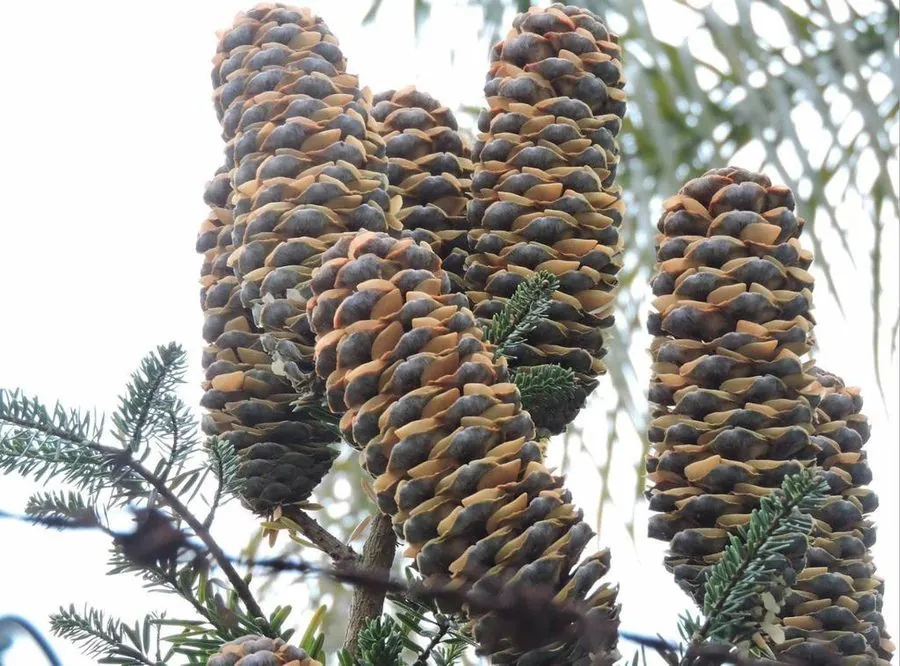

蕨类与裸子植物 · 植物界
油杉 Keteleeria fortunei

油杉是我国特有的常绿针叶树，叶条形而硬、球果大而直立，木材富含树脂，是南方山地的优良用材树种。
- 分类
- 门裸子植物门纲松纲目松柏目科松科属油杉属
- 栖息环境
- 海拔 1000 m 以下的低山丘陵，喜温暖湿润与酸性土壤
- 地理分布
- 中国浙江、福建、广东、广西、江西、湖南、贵州、云南等地
- 保护级别
- IUCN 暂无评估；中国国家二级重点保护野生植物
物种志
油杉是松科油杉属常绿乔木，高可达 30 m，树皮灰褐色、纵裂。叶片条形，扁平而硬，长 1.5–4 cm，螺旋状排列，基部扭转成两列，表面深绿色，叶背有两条气孔带。雌雄同株，雄球花簇生，雌球花单生。球果圆柱形，直立，长 8–18 cm，成熟时褐色，种鳞木质，种子具翅。
油杉是中国特有的树种，分布于浙江、福建、广东、广西、江西、湖南、贵州、云南等地的低山丘陵，多生于温暖湿润、排水良好的酸性土壤。它喜光、深根性，生长较慢，但木材纹理通直、富含树脂、耐腐力强，可供建筑、桥梁、家具与造纸。树姿端庄、四季常绿，也可作园林树种。由于分布区窄、种群数量少，油杉被列为中国国家二级重点保护野生植物。
形态与习性
- 树高可达 30 m
- 叶条形扁平坚硬，背有气孔带
- 球果圆柱形直立，长 8–18 cm
- 木材纹理通直、富含树脂
- 习性喜光深根，生长较慢
- 保护国家二级重点保护野生植物
趣味知识
- 油杉的球果大而直立，像插在枝条上的一支支小蜡烛。
- 它的木材富含树脂，耐腐力强，是优良的建筑用材。
- 油杉是中国特有的珍稀针叶树，被列为国家二级保护植物。